See the thesis of Simon Pasche for details. thesis
Nek5000
OpenFOAM
SFEMaNS (https://github.com/jean-luc-guermond/SFEMaNS)
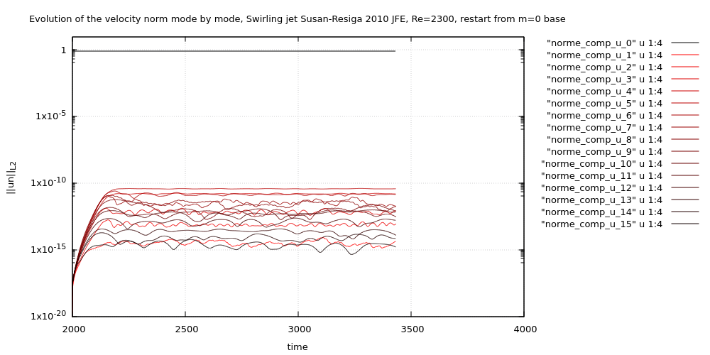
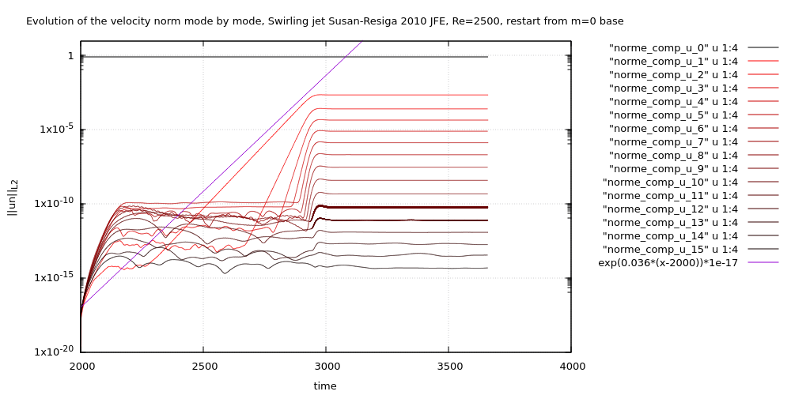
openFoam - LES WALE
mesh 14mln, Re=100k, dt=0.1, CFL around 5, 24 processors, wall time : 65 h for 1400 time units, video only 100 tu : 4.3 h, size of snapshot : U 800 MB; Q,p 270 MB
visualisation : 10 contours Q 0.2:0.2:2, probably all this is Re= 500k I just realised, y+ is computed as 0.00164*sqrt(mag(wallShearStress))/nuEff
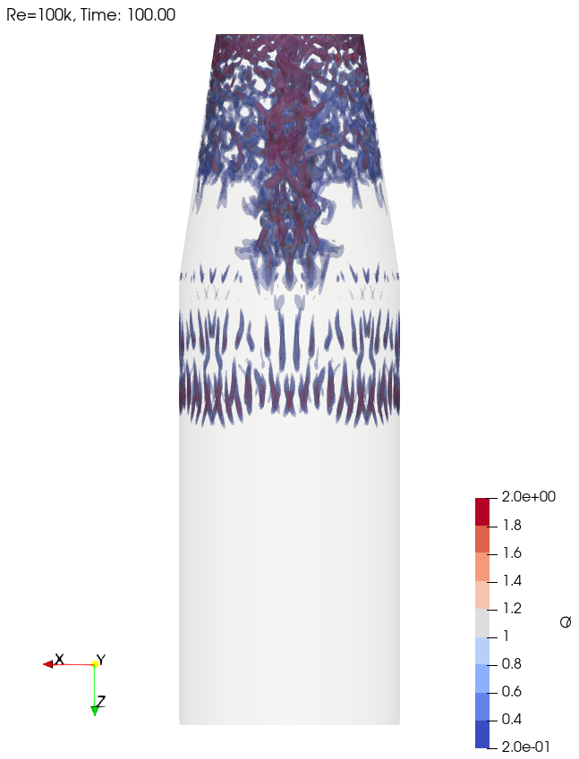
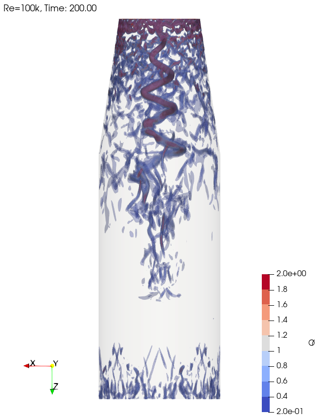
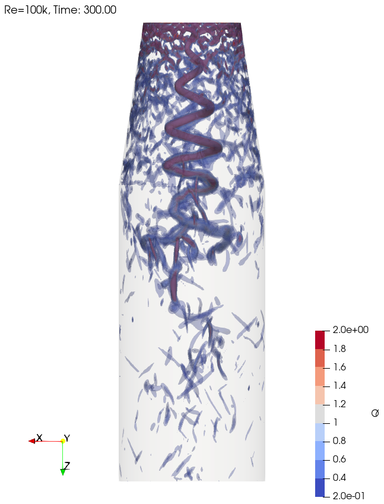
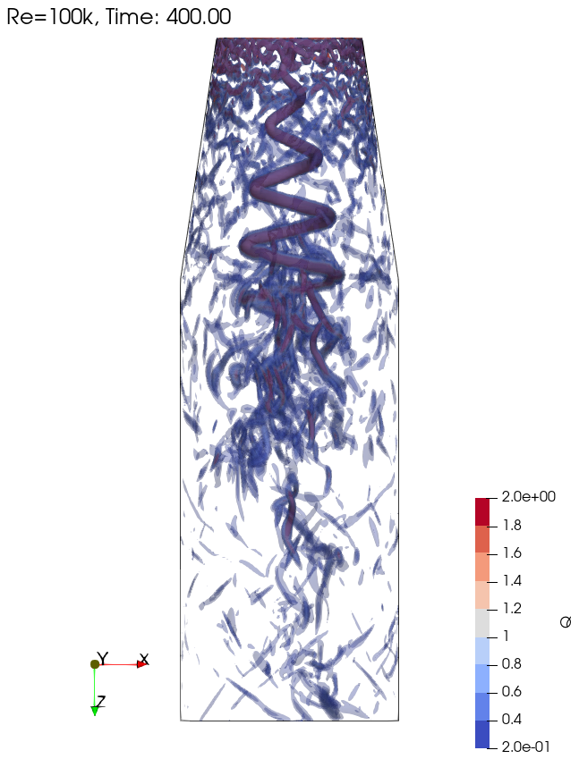
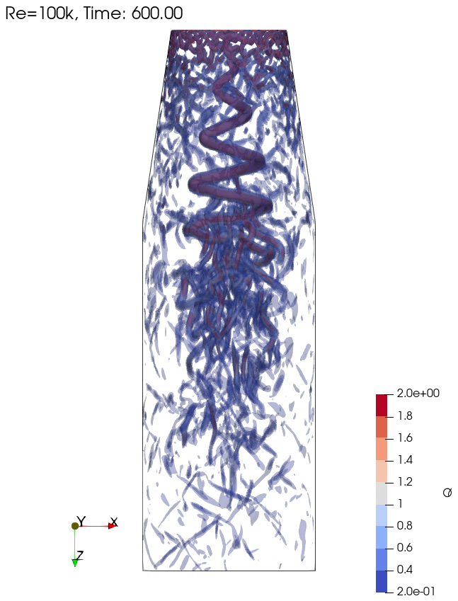
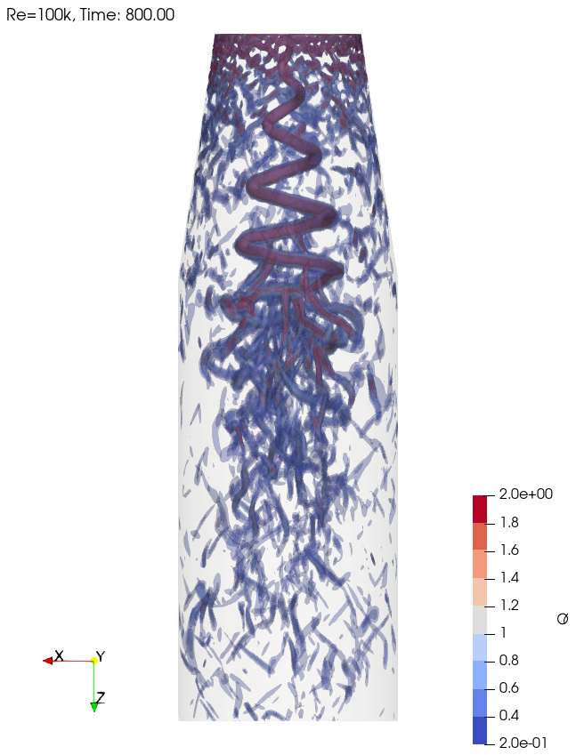
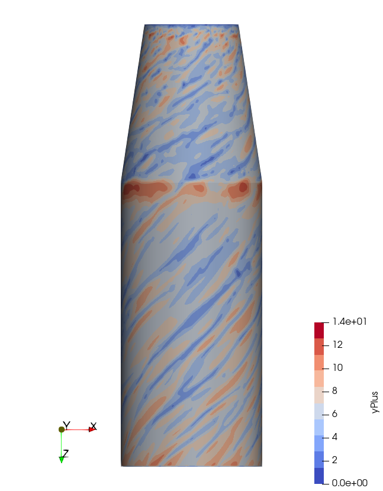
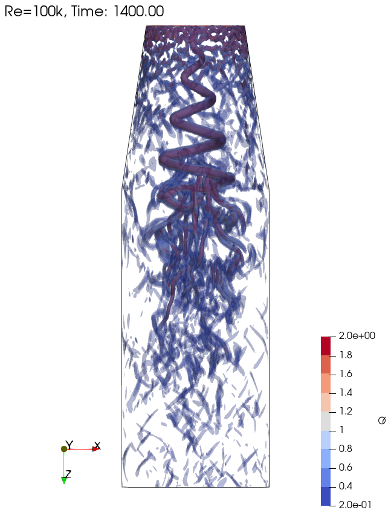
mesh 100k, Re=100k, dt=0.1, CFL around 0.6, 1 processors, wall time : 1.4 h for 1400 time units
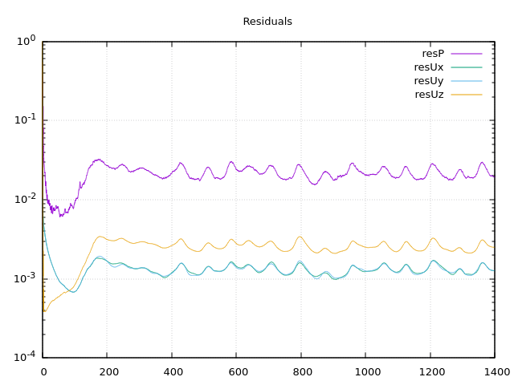
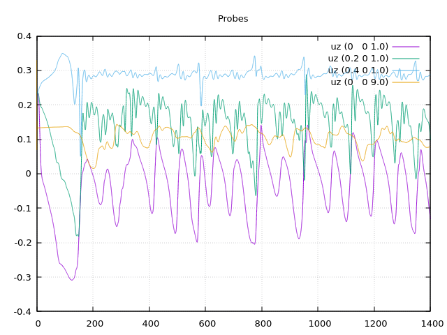